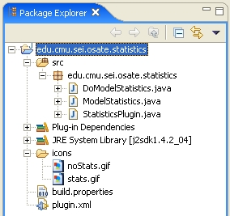

Previous
Next
Previous
Next 
| 3.4 Creating an Icon for the Plug-in |
We
should provide an icon our plug-in. If we do not, Eclipse will provide one for us: a red
square. Icons are provided as regular GIF files and are placed in the Eclipse project just like
an other file. They are typically placed in an icons subdirectory within the
project. This
directory is easily created within the project by selection New
| Folder
from the pop-up
menu in the Package Explorer view. GIF Files can be copied into this folder using
normal
drag-and-drop actions.
Actions
have two icons: one for when the action is enabled, and one for when the action is
disabled. If a disabled icon is not provided, Eclipse generates one based on the provided
enabled icon. It is a common practice to base your icon upon existing Eclipse icons. You
can
browse existing icons by searching for GIF files in the eclipse plugins directory.
We
provide both an enabled and disabled icon for the model statistics plug-in. The files are
called stats.gif and noStats.gif, respectively. The
resulting structure of the project is
shown in Figure 6.

Figure 6: Structure of the model
statistics plug-in project with icon files.